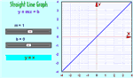
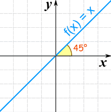

Linear Equations
A linear equation is an equation for a straight line
These are all linear equations:
 |
y = 2x + 1 | |
|
5x = 6 + 3y | |
|
y/2 = 3 − x |
Let us look more closely at one example:
Example: y = 2x + 1 is a linear equation:

The graph of y = 2x+1 is a straight line
- When x increases, y increases twice as fast, so we need 2x
- When x is 0, y is already 1. So +1 is also needed
- And so: y = 2x + 1
Here are some example values:
| x | y = 2x + 1 |
|---|---|
| -1 | y = 2 × (-1) + 1 = -1 |
| 0 | y = 2 × 0 + 1 = 1 |
| 1 | y = 2 × 1 + 1 = 3 |
| 2 | y = 2 × 2 + 1 = 5 |
Check for yourself that those points are part of the line above!
Different Forms
There are many ways of writing linear equations, but they usually have constants (like "2" or "c") and must have simple variables (like "x" or "y").
Examples: These are linear equations:
|
y = 3x − 6 | |
|
y − 2 = 3(x + 1) | |
|
y + 2x − 2 = 0 | |
|
5x = 6 | |
|
y/2 = 3 |
But the variables (like "x" or "y") in Linear Equations do NOT have:
- Exponents (like the 2 in x2)
- Square roots, cube roots, etc
Examples: These are NOT linear equations:
 |
y2 − 2 = 0 | |
|
3√x − y = 6 | |
|
x3/2 = 16 |
Slope-Intercept Form
The most common form is the slope-intercept equation of a straight line:

 |
|
| Slope (or Gradient) | Y Intercept |
Example: y = 2x + 1
- Slope: m = 2
- Intercept: b = 1
|  |
Play With It !You can see the effect of different values of m and b at Explore the Straight Line Graph |
Point-Slope Form
Another common one is the Point-Slope Form of the equation of a straight line:
|
y − y1 = m(x − x1) |
 |
Example: y − 3 = (¼)(x − 2)
It is in the form y − y1 = m(x − x1) where:
- y1 = 3
- m = ¼
- x1 = 2
General Form
And there is also the General Form of the equation of a straight line:
|
Ax + By + C = 0 |
| (A and B cannot both be 0) |
Example: 3x + 2y − 4 = 0
It is in the form Ax + By + C = 0 where:
- A = 3
- B = 2
- C = −4
There are other, less common forms as well.
As a Function
Sometimes a linear equation is written as a function, with f(x) instead of y:
| y = 2x − 3 |
| f(x) = 2x − 3 |
| These are the same! |
And functions are not always written using f(x):
| y = 2x − 3 |
| w(u) = 2u − 3 |
| h(z) = 2z − 3 |
| These are also the same! |
The Identity Function
There is a special linear function called the "Identity Function":
f(x) = x
And here is its graph:

It makes a 45° (its slope is 1)
It is called "Identity" because what comes out is identical to what goes in:
| In | Out |
|---|---|
| 0 | 0 |
| 5 | 5 |
| −2 | −2 |
| ...etc | ...etc |
Constant Functions
Another special type of linear function is the Constant Function ... it is a horizontal line:

f(x) = C
No matter what value of "x", f(x) is always equal to some constant value.
Using Linear Equations
You may like to read some of the things you can do with lines: